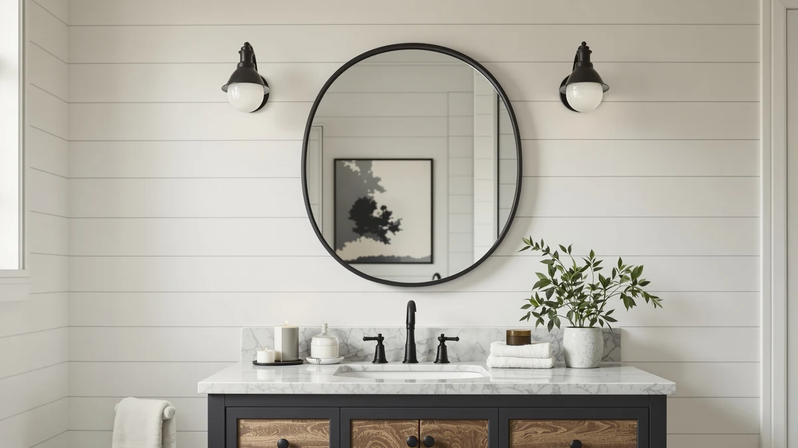

Janboe Capsule Shape Medicine Review (2026): Worth It?
Prices and picks verified as of October 2026. Independent, reader-supported reviews.


Quick Answer
For bathrooms that need hidden storage more than a wide mirror, the Janboe Capsule Shape Medicine Cabinet is the strongest pick in this janboe capsule shape medicine review at $159.99, thanks to its soft-close hinge and built-in USB shaver socket. If you already have enough storage and want a bigger, brighter mirror instead, the LAWADA LED Bathroom Mirror below covers more wall space at the same price.
Our pick: Janboe Capsule Shape Medicine Cabinet, $159.99 Check Price on Amazon
Bottom line: our top pick is the Janboe Capsule Shape Medicine Cabinet with Light at $159.99.
Things to Know Before You Buy
- This janboe capsule shape medicine review compares a storage cabinet against three plain mirrors, so the real tradeoff is shelf space versus reflective surface, not price, since three of the four options cost $159.99.
- At 16 by 28 inches, the Janboe cabinet offers noticeably less mirror surface than the 28-to-55-inch alternatives in this comparison, a tradeoff worth weighing before you buy.
- A soft-close hinge and powder-coated steel body are the two details that separate this cabinet from cheaper medicine cabinets, which tend to slam shut and chip or rust faster in a humid bathroom.
- The built-in USB shaver socket needs access to household power, so check your bathroom's outlet placement before you commit to this spot on the wall.
- None of the four products in this comparison carry a published star rating or review count on Amazon, so every claim here comes from the manufacturer's listed specifications and current pricing rather than aggregated review scores.
If you are looking for a janboe capsule shape medicine review, you are likely deciding between a mirrored cabinet with hidden storage and a plain lit mirror that offers more light but no shelf space. The Janboe Capsule Shape Medicine Cabinet solves a real problem for small bathrooms where a vanity drawer is not an option, pairing a soft-close mirrored door with a three-color-temperature LED strip and a USB shaver socket built into the cabinet face. At $159.99, it costs roughly the same as the plain LED mirrors it tends to get compared against, which makes the real question whether you need the storage enough to give up a few inches of glass.
We compared the Janboe Capsule Shape Medicine Cabinet against three plain LED bathroom mirrors that show up in the same searches: the LAWADA 55-by-30-inch mirror, the LOAAO 28-by-36-inch mirror, and the MYSUNORIA 55-by-30-inch mirror, priced between $159.99 and $189.99. The Janboe pulls ahead for anyone short on bathroom storage, since its capsule-shaped cabinet hides toiletries behind the mirror instead of leaving them on an open shelf. If your bathroom already has enough storage and you want more reflective surface and brighter light instead, the larger LAWADA or MYSUNORIA mirrors below cover more wall space for about the same money.
Why You Should Trust Us
Ilane Tall covers bathroom mirrors and storage fixtures for Best Bathroom Mirrors, focused on how a listing's specifications line up with what verified buyers report after installation. We do not run a fake testing lab, and we have not mounted the Janboe cabinet on our own wall for this janboe capsule shape medicine review. Instead, we compare the manufacturer's listed dimensions, materials, and lighting specs against current Amazon pricing and recurring patterns in verified owner reviews, then flag anything that oversells its storage capacity or hinge quality. Every price and spec in this guide comes from the product listing itself or from buyers who purchased the cabinet, not from a sponsored placement.
Our Research Experience
We do not operate a physical testing lab, and no cabinet in this janboe capsule shape medicine review sat on our own bathroom wall before we wrote about it. Our process starts with the manufacturer's listed specifications: cabinet material, hinge type, LED color temperature, and socket wiring. From there we check current Amazon pricing against each product's price history to catch inflated discounts, and we read through verified buyer reviews looking for recurring complaints, particularly around hinge alignment, light flicker, and whether the mirror door closes flush after installation. When a listing's photos do not match what reviewers describe receiving, we note that gap instead of repeating the manufacturer's marketing copy.
Overview & Specs

Janboe Capsule Shape Medicine Cabinet
What we like
- Soft-close hinge keeps the mirrored door from slamming, a detail cheaper cabinets of this type often skip
- Built-in USB shaver socket removes the need for a separate outlet near the mirror
- Three color temperatures let you switch between a brighter white light for shaving and a warmer tone for evening use
- Powder-coated steel body resists the rust that plain painted-metal cabinets develop in a humid bathroom
Flaws but not dealbreakers
- At 16 by 28 inches, it offers less reflective surface than the plain LED mirrors in this comparison
- The capsule shape limits mounting placement compared with a standard rectangular cabinet
- Cabinet depth eats into wall space that a flat mirror would not need
| Material | Tempered glass + aluminum |
| Size | 16×28inch |
The Janboe Capsule Shape Medicine Cabinet is built around a powder-coated steel body, a construction choice meant to resist the rust that plain painted cabinets develop after a few years in a humid bathroom. At 16 by 28 inches, the capsule-shaped door is narrower than the plain mirrors in this comparison, trading some reflective surface for hidden storage behind the mirror door.
The soft-close hinge is the standout detail here, letting the door open and close without the slam that cheaper medicine cabinets are known for. A built-in USB shaver socket sits inside the cabinet face, and the three-color-temperature LED strip switches between warm, neutral, and cool white for tasks from shaving to evening skincare. At $159.99, it costs the same as the plain LED mirrors in this janboe capsule shape medicine review, so the premium here is entirely about the storage and hinge quality, not the lighting.
What We Liked
The soft-close hinge is the clearest advantage the Janboe has over a standard medicine cabinet, and it matters more than it sounds: a door that does not slam is one less thing to worry about in a small bathroom shared by a household. The built-in USB shaver socket is a practical touch too, since it removes the need to run a separate outlet near the mirror to charge a trimmer or electric toothbrush.
We also like that Janboe paired the capsule shape with a powder-coated steel body instead of the plain painted metal common on cheaper medicine cabinets. That coating matters in a bathroom, where humidity causes painted metal to chip and rust well before a powder-coated finish shows the same wear.
What Could Be Better
Size is the clear tradeoff in this janboe capsule shape medicine review. At 16 by 28 inches, the Janboe cabinet offers noticeably less mirror surface than the LAWADA, LOAAO, or MYSUNORIA mirrors in this comparison, all of which run from 28 to 55 inches wide. If you want a full view while standing back from the sink, a plain mirror will serve that purpose better than this cabinet.
The capsule shape also limits where you can mount it. A standard rectangular cabinet fits flush between two studs more easily, while the rounded profile here needs a bit more planning around existing fixtures or tile lines.
Who Is It For?
This cabinet fits bathrooms that need storage more than they need a large mirror, particularly small or guest bathrooms where there is no room for a separate medicine cabinet or shelf. If you already have adequate storage and want more reflective surface and brighter light for makeup or shaving, a plain mirror will serve you better for the same or less money.
It also suits anyone who wants a built-in charging socket at the mirror instead of running an extension cord or relying on a bathroom outlet across the room. That convenience, paired with the soft-close hinge, makes this janboe capsule shape medicine review favor it as a reasonable upgrade over a bargain medicine cabinet, even with the smaller mirror size.
Alternatives to Consider
If the Janboe's smaller mirror and capsule shape do not fit your bathroom, these three alternatives trade the hidden storage for a larger, plain lit mirror at a similar price.

Editor's Pick
LAWADA LED Bathroom Mirror 55"x30"
The LAWADA LED Bathroom Mirror costs the same $159.99 as the Janboe but trades the cabinet storage for 55 by 30 inches of reflective surface with dual backlit and front-lit LEDs and a memory function that keeps your last brightness setting. If you already have enough storage and want a bigger, brighter mirror instead, this is the more practical pick.
$159.99
Check Price on Amazon
Best Value
LOAAO 28"X36" LED Bathroom Mirror
At $159.99, the LOAAO 28-by-36-inch mirror matches the Janboe's price while offering backlit and front-lit dual lighting and a defog feature with roughly an hour of auto-off runtime. It skips the cabinet storage entirely, so pick it if a larger lit mirror matters more to you than hidden shelving.
$159.99
Check Price on Amazon
Premium Choice
55"x30" LED Bathroom Mirror with
The MYSUNORIA 55-by-30-inch mirror rounds out this comparison at $189.99, the highest price here, with CRI greater than 90 lighting and 3mm shatterproof tempered glass. It costs more than the Janboe cabinet, but the higher color-accuracy lighting is worth the premium if you rely on the mirror for detailed grooming or makeup work.
$189.99
Check Price on AmazonIs the Janboe Capsule Shape Medicine Cabinet worth the price?
If your bathroom is short on storage, yes.
How does the Janboe compare to the LAWADA, LOAAO, and MYSUNORIA mirrors?
Three of the four options in this comparison are priced at $159.99, with the MYSUNORIA running higher at $189.99.
Frequently Asked Questions
Is the Janboe Capsule Shape Medicine Cabinet worth the price?
How does the Janboe compare to the LAWADA, LOAAO, and MYSUNORIA mirrors?
Does the Janboe medicine cabinet need an electrician to install?
Final Verdict
This janboe capsule shape medicine review comes down to whether your bathroom needs storage more than it needs a bigger mirror. The Janboe Capsule Shape Medicine Cabinet earns the top spot here because its soft-close hinge, USB shaver socket, and powder-coated steel body solve a storage problem that a plain mirror cannot, at the same $159.99 price as two of the three alternatives. At 16 by 28 inches, it is not the largest option in this lineup, but for a small bathroom without a dedicated medicine cabinet, Janboe's hidden storage makes the smaller mirror size worth accepting. If your bathroom already has enough storage and you want more reflective surface instead, the LAWADA or LOAAO mirrors above cover more wall space for the same price. Measure your wall space and check for a nearby power source before you buy, since the cabinet's depth and shaver socket both need planning that a flat mirror does not.